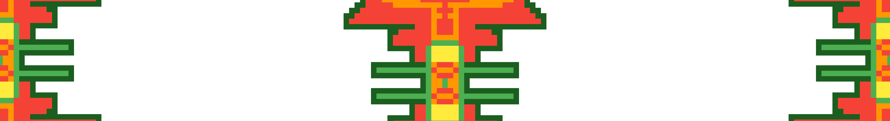
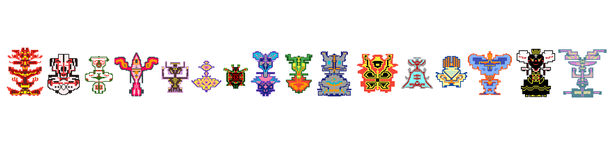
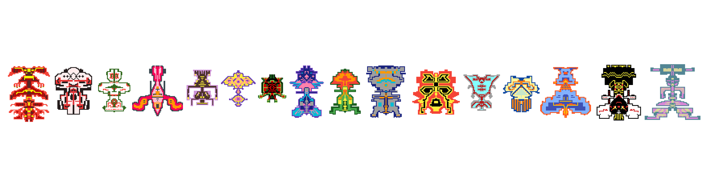
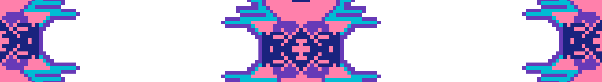

Hello, World!
This is vmsh, МАШ, Vicky or Victoria Masheva.
I am an artechie woman...
>@</ mmry.eu
the neocity of vmsh
Omnia

>@</ mmry.eu

Behance | Pixabay | WordPress | Facebook
Kukerche Memory Game
Kukerche Mastermind Game
Welcome to the world of KukercheArt!
The Bulgarian folklore is my passion and I am looking for alternative ways of interpreting and sharing its magic with the rest of the world.
I would like to present to you my digital friends - kukercheta. These little heroes are inspired by the Bulgarian kuker, the cosmos, the Bulgarian shevitsa, and the pixel of the screen. Kukerche means a small kuker. All the designs in this shop have their origin from a particular kukerche.
A "kuker" is a traditional Bulgarian mask and costume worn during ritualistic celebrations, particularly around the New Year and before Lent. These rituals, known as "kukeri" (plural for kuker), are part of an ancient tradition meant to scare away evil spirits and ensure a good harvest, health, and happiness for the coming year.
Key aspects of the kukeri tradition:
* Costumes and Masks: The costumes are elaborate and often made of fur, animal skins, feathers, and horns. The
masks can be quite large and are usually made of wood, covered with brightly colored fabrics, beads, and mirrors.
* Ritual Dances: Participants, often men, dressed as kukeri, perform special dances and rituals. They
typically carry bells and other noise-making instruments to drive away evil spirits.
* Symbolism: The kukeri's appearance and actions symbolize fertility and rebirth. The rituals they perform are
believed to chase away winter and evil spirits, making way for spring and good fortune.
* Regional Variations: While the core elements are consistent, different regions of Bulgaria have variations
in the costumes, masks, and specific rituals.
The tradition of kukeri is a vibrant part of Bulgarian folklore and cultural heritage, celebrated with great enthusiasm in many villages and towns across the country.

FriendRewind | YouTube | Bandcamp | Soundcloud | Spotify | Suno | StarNow | Last.fm | Facebook
Hear my life's formulae.
The YouTube playlist includes original and cover tracks of mine. There are: studio recordings, homemade covers, rehearsals and demos.
I am that type of a meloman who enjoys live performances and recordings. I want you to sing bad but from the buttom of your heart. It's really difficult for me sometimes to decide whether a song could tell me something. A lot of studio recordings without a heart
When I started learning to play the guitar, I was impressed that there were notes on the internet for "The Man Who Sold The World" by Nirvana, MTV Unplugged, and the notes included a mistake that Kurt Cobain makes.
So, why should I, or my music, be "perfect"? What is "perfect"?
Sometimes, when you love the song, you don't care for bad sound quality or minor mistakes, You just want to "Loop"!
Hope you enjoy!
Cheers!
Facebook | YouTube | Instagram | Medium | Blogger | WordPress
Since May 2026, "Шумното" (the noisy one) is an experimental content born in dialogue. My AI partner (“the other half” of the creative process here) and I, as the creator, combine human intuition and technological analysis to broadcast frequencies for those who are ready to listen.
Omnia | Beholding Space | Vivaldi Social | Bluesky | Neocities | Last.fm | LinkedIn | Blogger | WordPress | Behance | GitHub | YouTube
Tripod [2002] | Facebook | Instagram
An artechie woman with focused experience in:
** Software Professional Services **
(idea generation, pre-sales, requirements gathering, analysis, design, implementation, quality assurance, support, maintenance)
** Art Professional Services **
(idea generation, graphic design, web design, video and movie production, music production and performance, playing instruments, drawing, interior design, writing, and more)
Thank you for visiting!
@vmsh.xyz
